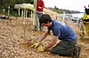

revegetation

Definition: Revegetation is the process of replanting and rebuilding the soil of disturbed land. This may be a natural process produced by plant colonization and succession, manmade rewilding projects, accelerated process designed to repair damage to a landscape due to wildfire, mining, flood, or other cause. Originally the process was simply one of applying seed and fertilizer to disturbed lands, usually grasses or clover. The fibrous root network of grasses is useful for short-term erosion control, particularly on sloping ground. Establishing long-term plant communities requires forethought as to appropriate species for the climate, size of stock required, and impact of replanted vegetation on local fauna. The motivations behind revegetation are diverse, answering needs that are both technical and aesthetic, but it is usually erosion prevention that is the primary reason. Revegetation helps prevent soil erosion, enhances the ability of the soil to absorb more water in significant rain events, and in conjunction reduces turbidity dramatically in adjoining bodies of water. Revegetation also aids protection of engineered grades and other earthworks.Organisations like Trees For Life (Brooklyn Park) provide good examples.
Source: Wikipedia
Wikipedia Page (Something wrong with this association? Let us know.)
Wikidata Page (Something wrong with this association? Let us know.)